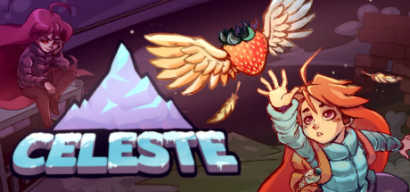
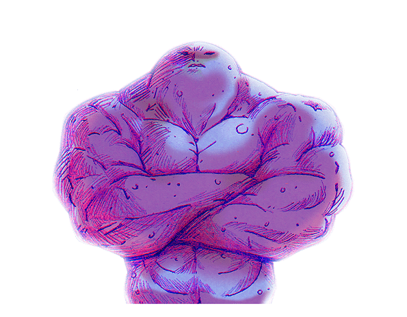
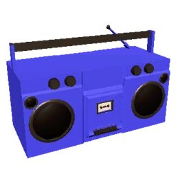
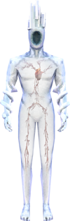

In short
- I like music, oneshot, and games
- I know Lua, some C#, and also some 3D modeling
- I want to do art and game development one day
Hello
Hello, I dont do very much. I'm an unemployed lazy bum. But god do I love music (AND peakshot), and I also like Ultrakill, Lethal Company, Omori, and Peak too. Music is my faviourite thing to ever exist, I listen to it allll the time. I cant even do anything without music. I really wanna make art one day, but i think i'll need something like a drawing tablet, or atleast something better than this mouse.
I also like forests, the mountains, the cold, fog, rain, and snow (especially the sizzling sound it makes when it snows for the first time) People always say it rains alot here, but it doesnt, it barley rains here, unfortunately. The coldest temperature i've ever felt in my life was around -50C (-58F).
Another one of my interests is photography. I like to take photos of the dark, fog, snow, and all of them at once. Low-quality photos look better than high-quality ones. I got a nice pocket-sized camera from 2005 passed down to me earlier this summer, so i'll be sure to take many photos using it this winter.
Game Development and related things
I've wanted to make games ever since from the start of time for me. Currently, I know a bit of the programming language C# (I made an unoptimized sorta "multi-threaded" triangle rasterizer in Godot), I know Lua, but it's impossible to work with without classes. I also know the basics of blender, and had to learn some HTML and CSS to make this website.
I want to make a transpiler language for lua because of its lacking QOL features, adding things like classes, switch/case, () => {}, async/await, a static-type system, ect.
I also want to make a video game reminiscent of Stardew Valley or Skyblock, and a unique extration/dungeon-crawler game, like Lethal Company or Roblox Pressure's overhaul update concept.
I also-also hope to learn graphics programming sometime in the future, the graphics of Peak look nice.
Games I like
My favourite games

I cried about the ending like a few months after I already finished it, it's sooooo good, especially for a 7-10 hour game. This and ultrakill are probably the best games i'll ever play

The mechaninc of using blood as fuel is fun and unique, also the story is intriguing too. Best FPS game i'll ever play

I've had alot of fun times on this game. It mixes horror and comedey perfectly
My other favourite games

Theres sooo much content in this game. The art and music is really good, but theres alot of yapping and some things are cringe

The graphics are really beautiful. It's a fun though short game. After you finish it there isn't much left to do

I haven't finished it but it's a good farming game
Games I wanna play

It looks like a fun and interesting game. The music is good

It looks like a physics-based lethal company

I hear everyone talk about this game

WHEN I FLEX, I FEEL MY BEST!!
- PLUTO (EXPANDEDDDDDDD)

